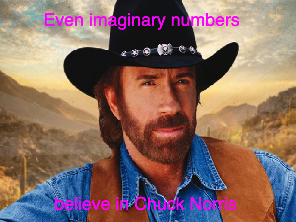
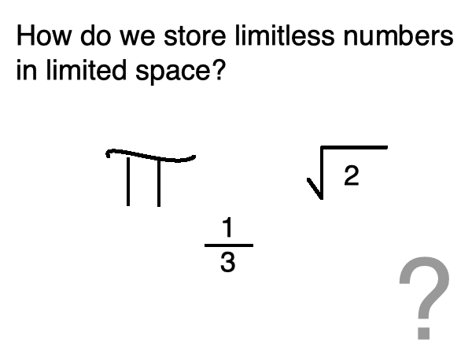
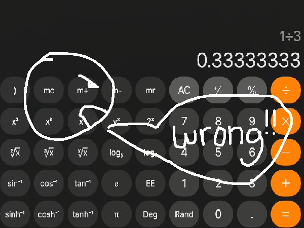
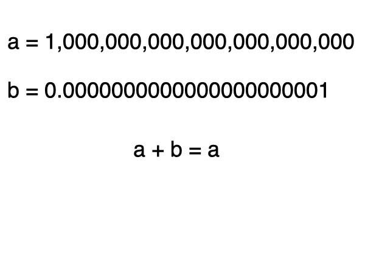

you smart good
Programming Concepts
Floating Point
You've been doing a great job of keeping up with this course so far!
On this page, we're gonna talk about a couple concepts we haven't really discussed yet.
You won't be quizzed on this (although your next review is coming up), but I wanted to make you aware of some stuff here.

We've established that bits are essentially storage, and a bit only has a limited amount of storage.
But wait, what if we have a number that never ends?
For example, what if we're trying to store 1/3? If you remember from math classes you've probably had, one over three is zero point three repeating. And the three repeats forever. So what do we do with this?

Think about a basic calculator. What happens when you input 1/3 into a calculator? You will probably see something like this: 0.3333333333
But that isn't actually correct, is it? Because 1/3 never ends, but the calculator display shows a number with an end.
This is what happens with a limited storage space. This idea is called floating point storage.
Numbers must be rounded because there is no way to fit the entire number within the given storage. So we can only actually store an approximate number.

So numbers are really only approximates in binary. Let's think about some examples:
1/10 can not actually be represented exactly in binary. We can only use an approximate value. So what happens when you want to add 1/10 to itself 10 times?
You would think that the answer would be 1, right? Well in binary, the value would actually be close to 1, but not exactly 1.
Now what if you want to add an extremely large value and an extremely small value together?
If the storage is not able to fit both values together, the smaller number will simply disappear and the sum will only be the larger value.

Wait a minute, we keep looking at examples of decimals, but we haven't learned how to do decimals in binary. That means we're gonna learn that next, right??
. . . no.
I have no idea how to do non-integers in binary. I didn't have to learn how to do that in my class so I'm not really qualified to show you how to do it either.
Oh well. Moving on!!